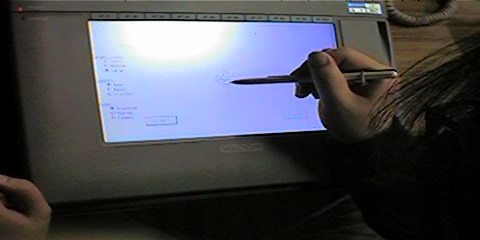

第 227 回 PTT のお知らせ
日時: 1997年 3月6日 (木) 18:30 から
場所: 電気通信大学情報工学科 西9号館 AVホール(3階)
新宿駅より京王線，調布駅(特急で2つ目，15分) 北口
下車，北西方向徒歩12分程度，電気通信大学西地区キャン
パスの南西端にある白い建物; 甲州街道(国道20号線)
下石原交差点の北20メートルに西門あり．
話者：宮岡 亜矢子、角田 博保 (電気通信大学情報工学科)
題目：携帯型日本文入力方式を目指して（ペンと片手キーボードと…）
概要：
モーバイル環境での日本文入力装置として、片手キーボードと
ペンを取り上げ、過去３年間にわたって研究してきた。その成果を発表する。
片手キーボードでは普通のキーボードの半分を使い、片手でかな文字
が入力できる方式（HAI式）を考案し、実験により学習性、入力速度
などの特性を評価した。ペンではかなUnistrokeとかなT-Cubeを考案し
同様に実験により評価した。
当日はデモを交えて説明する。
（実際の携帯型装置の製作までには至っていない。）
食事:
今回もありません。調布駅近辺のハンバー
ガー、ドーナッツ、その他をご利用くださ
い。電通大の正門のすぐ西にもＭで始まる
ハンバーガー屋が待っています。
スナップショット
-
説明をする角田さん
-
説明をする宮岡さん
-
片手打ちの実演
-
映った画像
-
説明をする角田さん
-
ペン入力の実演
-
説明をする赤松さん
-
回路図
- 
かなT-cubeの実演(よく見えませんが)
-
同じく
第 227 回 PTTメモ
日時: 1997年 3月6日 (木) 18:30 から
場所: 電気通信大学情報工学科 西9号館 AVホール(3階)
題目: 携帯型日本文入力方式を目指して（ペンと片手キーボードと…）
話者: 宮岡 亜矢子、角田 博保, ... (電気通信大学情報工学科)
出席者:
和田英一,
下國治(富士通研),
伊知地宏,
佐口泰之(富士ゼロックス),
大久保弘崇(名古屋大),
山梨素明(ブラザー工業),
山口啓介,
中村嘉志,
齊藤正伸,
多田好克,
小口和弘,
筒井徹(電通大),
佐藤元信,
早川栄一(農工大),
前野年紀(東工大),
石畑清(明大),
小出洋(原研),
佐々木崇郎(慶大),
田中哲朗(東大)